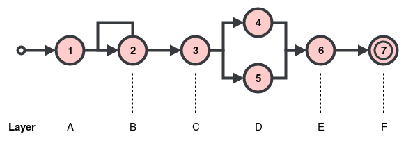

Patterns¶
Introduction¶
Defining a complex event requires a pattern that, when fulfilled with relevant events from the input stream,
will trigger the generation of a complex event.
The BoboPattern API is provided to define patterns.
When we define a pattern, we are defining layers of an automaton, where each layer has one or more states. This is demonstrated in the figure below.

The relationship between automaton states and their labels.¶
State 2 is a looping state, making it nondeterministic because it can transition to either state 3 or back to state 2 again. Every event that causes a loop back to state 2 will be associated with label B. State 3 can transition to both state 4 and state 5, making it nondeterministic also. Events for both state 4 and state 5 will be associated with label D.
We define a new BoboPattern instance as follows.
from bobocep.rules.nfas.patterns.bobo_pattern import BoboPattern
pattern = BoboPattern()
Transitions¶
Building a pattern requires building a sequence of transitions between layers of states. To cause a state transition, an event is required to fulfil the criteria of the state’s predicate. The predicate is a function that takes three arguments:
The event that is attempting to fulfil the criteria.
A
BoboHistoryinstance that contains all of the previous events that have currently been accepted by the run of the automaton.Recent
CompositeEventandActionEventinstances, represented as a list of events in descending order i.e. the most recent event first.
In Python, we can define a predicate in three ways. A regular function.
from typing import List
from bobocep.rules.events.bobo_event import BoboEvent
from bobocep.rules.events.histories.bobo_history import BoboHistory
def my_function(event: BoboEvent, history: BoboHistory, recent: List[BoboEvent]) -> bool:
# return [...]
predicate = my_function
A lambda expression i.e. anonymous function.
predicate = lambda e, h, r: # [...]
Or, an object’s method.
class MyClass:
def my_method(self, event: BoboEvent, history: BoboHistory, recent: List[BoboEvent]) -> bool:
# return [...]
obj = MyClass()
predicate = obj.my_method
Where e is the BoboEvent instance, h is the BoboHistory instance, and r is the
list of recent events.
When the predicate is defined, it needs to be placed into a BoboPredicateCallable instance, as follows.
from bobocep.rules.predicates.bobo_predicate_callable import BoboPredicateCallable
pred_call = BoboPredicateCallable(predicate)
If the predicate returns True, the state associated with the predicate becomes the next state of the run.
If False, the run will take some other action, depending on the contiguity policy associated with the
transition, discussed next.
Contiguity¶
The contiguity is the policy of states with regard to how they react to events that do not cause a state transition.
bobocep supports three types.
Strict¶
All matching events are strictly one after the other, without any non-matching events in-between.
If an event does not match, the run halts.
The next interface is used for strict contiguity.
pattern.next(
label="label_strict",
predicate=pred_call)
Relaxed¶
All non-matching events are ignored; the run simply waits for a matching event.
The followed_by interface is used for relaxed contiguity.
pattern.followed_by(
label="label_relaxed",
predicate=pred_call)
Non-Deterministic Relaxed¶
The same as relaxed contiguity, but allows multiple matches from a state when its transition is non-deterministic.
The followed_by_any interface is used for non-deterministic relaxed contiguity.
pattern.followed_by_any(
label="label_nondet",
predicates=[
pred_call_1,
pred_call_2,
pred_call_n
])
Conditions¶
Before an event is passed to any state in a run, it is first passed to a set of preconditions, followed by a set of haltconditions.
Preconditions¶
Preconditions are predicates where, if any of them evaluate to False, the run halts.
One of the most important preconditions is a time window, where runs require completion within some given
time limit.
This is important for state clearance i.e. ensuring runs are always eventually halted and removed from memory,
to prevent a build-up of incomplete runs with no means of halting.
For example, if we want to ensure that all events occur within 1 minute of the first accepted event, we can use
WindowSlidingFirst to specify the time interval, in seconds, that can exist between the first accepted event
and the current event being checked.
from bobocep.rules.predicates.windows.sliding.window_sliding_first import WindowSlidingFirst
pattern.precondition(WindowSlidingFirst(interval_sec=60))
Each call of the precondition interface will add another predicate to the list.
Haltconditions¶
Haltconditions are predicates where, if any of them evaluate to True, then the run halts.
This is useful if you want a run to halt if something happens within the lifetime of the run.
For example, to halt if a CompositeEvent with name 'B' has recently been generated.
pattern.haltcondition(
BoboPredicateCallable(lambda e, h, r: isinstance(e, CompositeEvent) and e.name == 'B')
Each call of the haltcondition interface will add another predicate to the list.
Chaining Patterns¶
Multiple BoboPattern instances can be chained together.
pattern_a.append([
pattern_b,
pattern_c
])
In the example above, pattern_a contains the transitions, preconditions, and haltconditions of pattern_b
directly after those already in pattern_a, and pattern_c information directly after that.